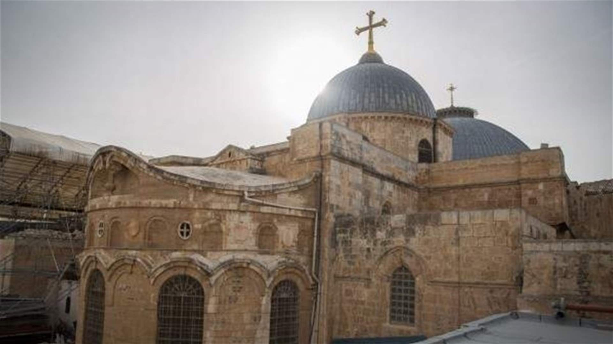
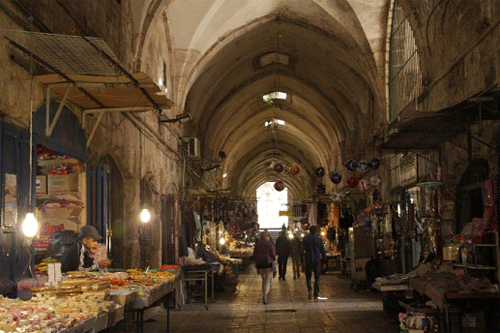

المسجد الأقصى المبارك
تتميز بقبتها الذهبية الساحرة وتصميمها المعماري الأموي الفريد, وتعتبر من أقدم التحف الهندسية الإسلامية القائمة حتى يومنا هذا في قلب ساحات الأقصى
للتأمل في جمال الزخارف الداخلية والتقاط الصور. معلومات الزيارة المهمة: مدة الزيارة الموصى بها هي ساعتان على الأقل
يمكنك قراءة تفاصيل دقيقة وتاريخية عريقة تنبض بالقدسية موسوعة ويكيبيديا عن الأقصى

كنيسة القيامة
تعتبر من أهم وأعرق الكنائس في العالم المسيحي, وتمتاز ببناء هندسي وتاريخي عظيم يعود إلى القرون الوسطى وتجذب .الزوار من كافة بقاع الأرض لعراقتها بصرياً
خطوات ومسار جولة استكشاف الكنيسة:
- الدخول من البوابة الرئيسية المؤدية إلى ساحة الكنيسة.
- التوقف عند حجر المغتسل الأثري عند الدخول.
- الصعود إلى تلة الجلجثة واستكشاف القبة الكبرى (الروتوندا)

أسواق القدس القديمة
مجموعة من الأسواق التاريخية المسقوفة مثل سوق العطارين وخان القطانين وخان الزيت تتميز بممراتها الضيقة والحلويات والمصنوعات اليدوية التراثيةالشامية